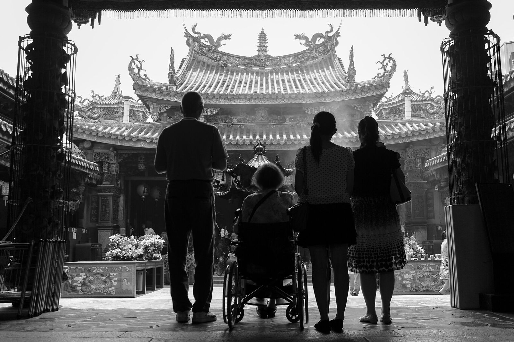
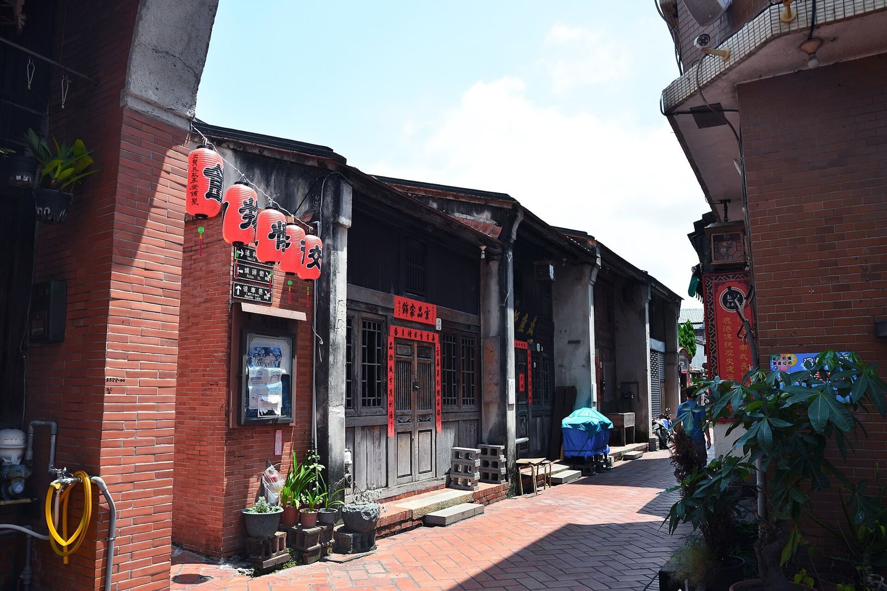

루강 천후궁과 옛거리, 주말엔 어떤 순서로 돌까?
사당은 아침 일찍, 옛거리는 가게가 문을 연 뒤에. 순서만 바꿔도 덜 붐벼요.
게시
루강 천후궁(鹿港天后宮)은 연중무휴로 매일 오전 6시부터 밤 10시까지 무료로 열려요. 주말에 간다면 오전 일찍 천후궁부터 보고, 가게들이 문을 여는 10시 무렵부터 야오린제(瑤林街)·푸터우제(埔頭街) 옛거리로 걸어가는 순서가 덜 붐벼요. 음력 1~3월 진향(進香) 시즌에는 사당 주변이 특히 붐비니 이 시기라면 더 일찍 움직이세요.
내정부와 창화현 관광 사이트 안내를 기준으로, 처음 가는 사람이 알아두면 좋은 부분만 골라 정리했습니다.
01 · 루강 천후궁 기본 정보 (2026년 11월 기준)
| 항목 | 루강 천후궁 | 루강 옛거리 |
|---|---|---|
| 주소 | 彰化縣鹿港鎮中山路430號 | 彰化縣鹿港鎮瑤林街·埔頭街 일대 |
| 시간 | 매일 06:00~22:00, 연중무휴 | 창화현 관광 사이트 표기 10:00~18:00(가게마다 다름) |
| 입장료 | 무료 | 거리는 자유롭게 걸을 수 있어요 |
| 붐비는 때 | 음력 1~3월 진향 시즌, 음력 3월 23일 마조 탄신일, 음력 9월 9일 | 주말 낮 |
천후궁은 국정 고적으로, 창화현 관광 사이트에 따르면 청나라 옹정 3년(1725년)에 지금 자리로 옮겨 지었어요. 대만에서 유일하게 메이저우(湄洲) 조묘의 개기(開基) 마조상을 모시는 사당이라 일 년 내내 참배객이 많아요. 매년 큰 행사일은 음력 3월 23일 마조 탄신일과 음력 9월 9일 마조 비승(飛昇) 기념일이에요.

02 · 주말에 루강 천후궁과 옛거리를 도는 순서
오전 일찍 천후궁부터 사당은 오전 6시에 열어요. 사람이 몰리기 전에 정전(正殿)과 목조·석조 장식을 천천히 볼 수 있어요.
10시 무렵 야오린제로 야오린제는 길이가 30m 정도인 가장 짧은 옛거리예요. 옛 선박 무역상 합화행(合和行)과 맞은편 합덕당(合德堂) 고택, 담 안팎으로 반씩 걸친 반쪽 우물(半邊井)이 이 거리에 있어요. 고택은 대부분 안에 들어갈 수 없고 밖에서 보는 곳이에요.
모퉁이를 돌아 푸터우제 야오린제 끝 모퉁이를 돌면 푸터우제예요. 바람과 도둑을 막으려고 길을 일부러 꺾어 놓아 골목이 여러 번 굽어요. 전통 과자·공예품 가게와 카페가 줄지어 있어요.
루강 공회당과 남정궁 1928년에 지은 루강 공회당(鹿港公會堂)은 지금 전시 공간으로 쓰이고, 바로 옆 남정궁(南靖宮)은 1783년에 지은 작은 관우 사당이에요. 옛거리 끝에서 함께 보기 좋아요.

03 · 루강 옛거리에서 굴 요리 먹기
루강은 굴 요리로 잘 알려진 동네라, 원글을 쓴 여행자도 이 동네는 굴국수와 굴 요리가 유명하다고 적었어요. 창화현 관광 사이트에 소개된 곳 중 하나가 천후궁 근처 민성루(民生路)의 三姐妹蚵仔煎(彰化縣鹿港鎮民生路28號)으로, 관광 사이트 표기 영업시간은 10:00~20:00이에요. 굴전(蚵仔煎)이 대표 메뉴이고, 영업시간은 바뀔 수 있으니 방문 전 구글맵에 등록된 영업시간을 확인하세요.
점심은 조금 이르게 주말 점심때는 옛거리 식당도 붐비기 쉬우니, 천후궁을 일찍 보고 점심 피크보다 조금 이르게 먹는 편이 여유로워요.
전통 과자는 선물로 창화현 관광 사이트는 옛거리에 100년 넘게 이어 온 과자·면차(麵茶)·숭어알(烏魚子) 가게가 있다고 소개해요. 들고 가기 편한 선물을 고르기 좋아요.
골목은 걸어서 옛거리는 붉은 벽돌 골목이 좁고 굽어 있어 걸어서 도는 곳이에요. 편한 신발이면 충분해요.
04 · 자주 묻는 질문
루강 천후궁은 몇 시에 열어요? 2026년 11월 기준 매일 오전 6시부터 밤 10시까지 열고, 연중무휴예요.
루강 천후궁 입장료가 있나요? 없어요. 누구나 무료로 들어가 참배하고 둘러볼 수 있어요.
가장 붐비는 때는 언제예요? 음력 1~3월 진향 시즌, 특히 음력 3월 23일 마조 탄신일 전후가 가장 붐벼요. 평소에도 주말 낮은 사람이 많아요.
루강 옛거리는 어디부터 어디까지예요? 보통 야오린제와 푸터우제 두 거리를 말해요. 야오린제에서 모퉁이를 돌면 바로 푸터우제로 이어져요.
타이중에서 루강은 어떻게 가요? 타이중역(푸싱로)에서 중록커윈 9018번 국도버스를 타면 루강까지 바로 가요. 타는 곳과 요금은 9018번 버스 글에 정리해 두었어요.
타이중에서 루강까지 버스로 간다면 타이중 루강 버스 9018 타는 곳과 요금을 먼저 보세요. 아이와 장화(彰化)를 하루 더 돈다면 장화 팔괘산 하늘놀이터도 함께 묶기 좋아요. 타이중으로 돌아와 저녁을 먹는다면 타이중 맛집 지도와 타이중 대만식 맛집에서 고르면 되고, 지도에 있는 饕之鄉李姐的店도 그중 한 곳이에요. 타이중 시내 볼거리는 타이중 꼭 가볼 곳에 모아 두었습니다.
지도에서 타이중 맛집도 확인해보세요
루강에서 돌아와 먹을 타이중 대만식 맛집을 지도에서 미리 찜해 두세요.